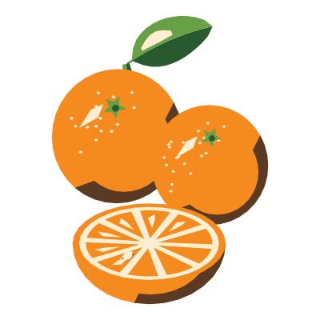
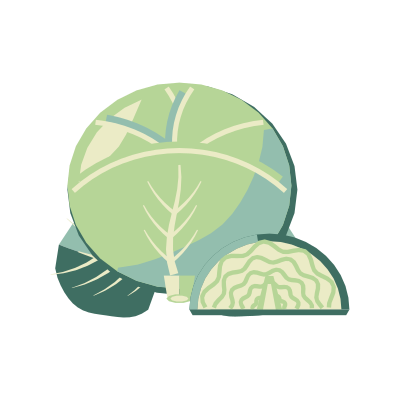
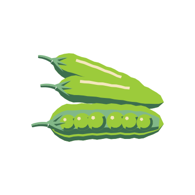
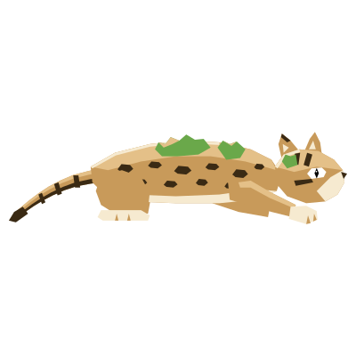
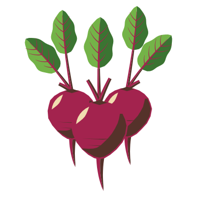

Everything on this stall grew on an island.
Unclaimed Acres is a cosy farming and creature game on the WAX blockchain. Claim an island of your own, grow whatever you like, and get to know the regulars who wander by.
In development. Play at your own pace, there is no closing time.







Sixty-four crops,
picked at their best.
From everyday carrots to a few things you will not find at any other market. Every crop is drawn through eight stages, from seed packet to harvest, plus a wilted one.
Garden favourites

 Carrots8 stages
Carrots8 stages Tomatoes8 stages
Tomatoes8 stages Corn8 stages
Corn8 stages
Beetroot8 stages
Sweet and sunny

 Grapes8 stages
Grapes8 stages Watermelon8 stages
Watermelon8 stages Pineapple8 stages
Pineapple8 stages Lemon8 stages
Lemon8 stages
The odd corner

 Glowcap8 stages
Glowcap8 stages Egg plant8 stages
Egg plant8 stages Milk pouch8 stages
Milk pouch8 stages Moonbloom8 stages
Moonbloom8 stages
Twelve of 64. The rest are still out in the fields: coffee, cacao, durian, blue java bananas and plenty more.
From seed to stall,
in eight drawings.
Here is the strawberry patch, start to finish. In the field you see your crops from above, just as they look on your island map.
- Seeds

- Sown

- Sprout

- Leaves

- Flowers

- Ripe

- Harvest
- Wilted


On the board today
Everything you can get up to on Unclaimed Acres.
- Claim your own island
Each island is generated and stored on the WAX blockchain, and owned by your wallet.
- Grow 64 different crops
Every one drawn through eight stages, from seed to harvest, and wilted.
- Meet more than 50 creatures
Foxes, owls and red pandas, plus kitsune, kirin and a lantern giraffe.
- Explore your coastline
No two islands alike: peninsulas, bays, beaches, forests, lakes and terraced snowy peaks.
- Take your time
Play at your own pace. Pop in for five minutes or stay all afternoon.
- Bring any WAX wallet
Connect with WAX Cloud Wallet, Wombat or Anchor.
Familiar faces
around the stall.
More than 50 creatures live in Unclaimed Acres. Each is drawn twice: from the side, and from above for when it wanders across your map.

Fox
Always first in line.


Lantern giraffe
Handy when it gets dark.


Kitsune
Counts its tails, not its change.


Wind hare
Here one moment, gone the next.


Crystal turtle
Takes the scenic route.


Blossom stag
Brings its own flowers.


Baku
Dozes behind the melons.


Pegasus
Arrives by air, naturally.
8 of 50+. Others you may bump into: red pandas, owls, a moon cat, kirin, a phoenix and the odd sea serpent.
Greetings from your island.
Every crate on this stall comes from one place: an island that is generated once, kept on the WAX blockchain and owned by your wallet.
- No two islands are alike
- Peninsulas, bays, beaches and lakes
- Forests and terraced, snowy mountains
- Yours to tend, whenever suits you


Wish you were here!
The strawberries came up lovely, a fox keeps visiting, and the snow on the mountain never melts.
 the mountain, up close
the mountain, up closePull up a crate.
Stay a while.
Connect a wallet to claim your island and start your first patch. Unclaimed Acres is still in development, and there is room for everyone.
Works with WAX Cloud Wallet, Wombat and Anchor.